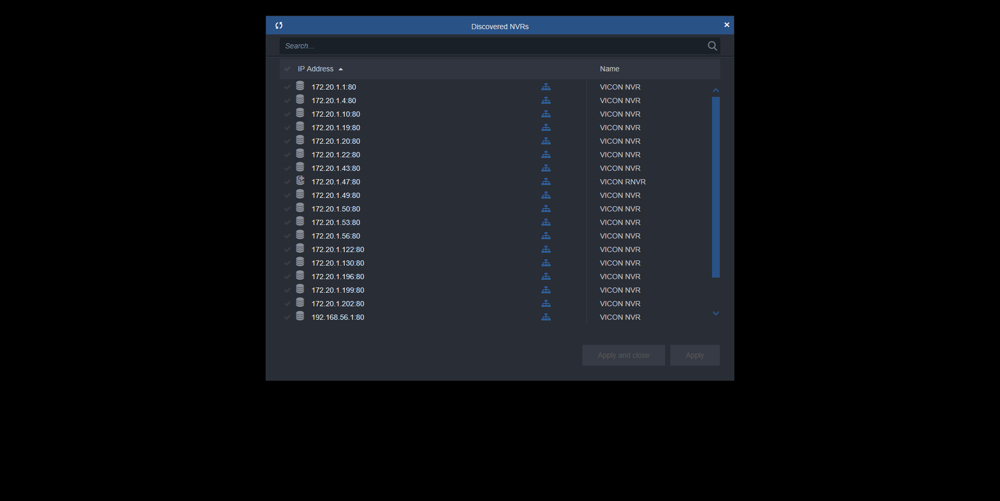
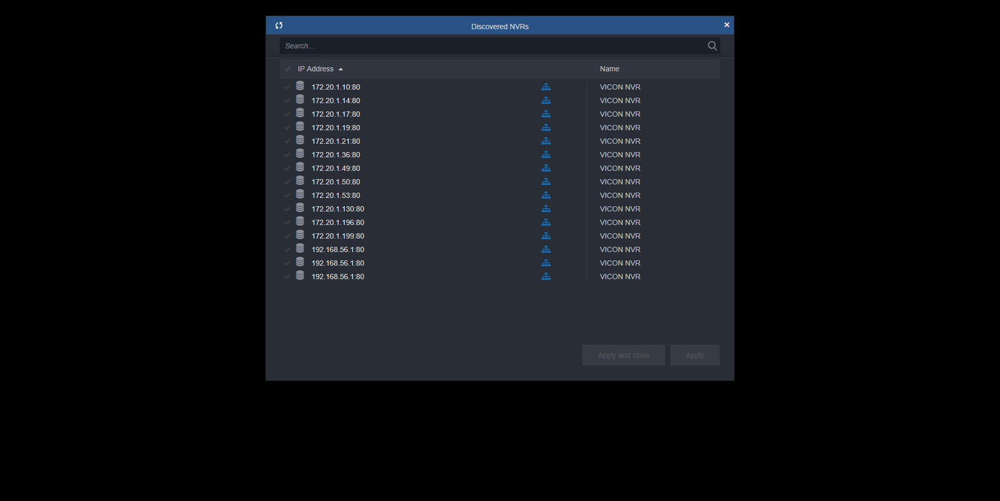

Total Tests
Total Steps
Total Time Taken (Current Run)
7h 28m 29s+469ms
Total Time Taken (Overall)
7h 28m 29s+469ms
Start
2020-02-06 13:37:09
End
2020-02-06 21:05:39
Pass Percentage
Environment
| Param | Value |
|---|---|
| User Name | popatb |
| OS | Windows 10 |
| Java Version | 1.8.0_202 |
| Host Name | BORSE-PC |
Tests
-
AddAlreadyUsedNVRManuallyTest pass2020-02-06 13:38:01 2020-02-06 13:38:16 0h 0m 14s+987ms
Status Timestamp Details 13:38:01 add NVR 172.20.1.42 if it isn't exists 13:38:01 Select NVR with Online status 13:38:02 Get a port from selected NVR 13:38:05 Open Add NVR Manually window 13:38:06 Input into IPAddress field 172.20.1.42 13:38:08 Input into port field 80 13:38:10 Input into UserName field ADMIN 13:38:12 Input into password field 1234 13:38:12 Apply NVR adding 13:38:13 Check that 'IP Address already exists in the system' notification appears 13:38:16 Confirm 'IP Address already exists in the system' notification 13:38:16 Cheking that NVR count after is equal to NVRs count before 13:38:16 Test is passed -
AddNVRAndCheckStatusVTest pass2020-02-06 13:42:21 2020-02-06 13:43:02 0h 0m 40s+735ms
Status Timestamp Details 13:42:21 Adding NVR 172.20.1.46 13:42:21 Delete NVR172.20.1.46 13:42:40 NVR172.20.1.46 is deleted 13:42:59 NVR172.20.1.46 is added 13:43:02 NVR 172.20.1.46 is added in the Centaral Panel list 13:43:02 NVR status is Online 13:43:02 Test is passed -
AddNVRAndPressApplyTest pass2020-02-06 13:44:10 2020-02-06 13:44:47 0h 0m 37s+630ms
Status Timestamp Details 13:44:10 Delete NVR172.20.1.46 13:44:29 NVR172.20.1.46 is deleted 13:44:43 Discovered NVRs window is open 13:44:43 Select NVR 172.20.1.46 and Apply adding 13:44:47 Check that 'Discovered NVRs' window isn't closed 13:44:47 Assert that NVRs count increased by 1 13:44:47 Test is passed -
AddNVRManuallyAndPressApplyTest pass2020-02-06 13:45:38 2020-02-06 13:46:13 0h 0m 34s+862ms
Status Timestamp Details 13:45:39 Delete NVR172.20.1.46 13:46:03 NVR172.20.1.46 is deleted 13:46:05 Open Add NVR Manually window 13:46:07 Input into IPAddress field 172.20.1.46 13:46:08 Input into UserName field ADMIN 13:46:09 Check that Apply button is enable after changes 13:46:09 Check that ApplyAndClode button is enable after changes 13:46:09 Input into password field 1234 13:46:10 Apply adding 13:46:11 Check that Apply button is disable after changes 13:46:11 Check that ApplyAndClode button is disable after changes 13:46:11 Check that 'Add NVR Manually' window is open 13:46:13 Assert that NVRs count increased by 1 13:46:13 Test is passed -
AddNVRManuallyAndPressCloseTest pass2020-02-06 13:47:03 2020-02-06 13:47:19 0h 0m 16s+68ms
Status Timestamp Details 13:47:05 Open Add NVR Manually window 13:47:07 Input into IPAddress field 172.20.1.42 13:47:09 Input into UserName field ADMIN 13:47:10 Assert that Apply button is enabled 13:47:10 Assert that ApplyAndClose button is enabled 13:47:10 Input into password field 1234 13:47:12 Close Add NVR manually window 13:47:13 Check that 'Add NVR Manually' window is closed 13:47:19 Cheking that NVR count after is equal to NVRs count before 13:47:19 Test is passed -
AddNVRManuallyAndSwitchONSecuredTest pass2020-02-06 13:48:13 2020-02-06 13:49:03 0h 0m 50s+21ms
Status Timestamp Details 13:48:14 Delete NVR172.20.1.46 13:48:34 NVR172.20.1.46 is deleted 13:48:36 Open Add NVR Manually window 13:48:37 Input into IPAddress field 172.20.1.46 13:48:38 Input into Port field 172.20.1.46 13:48:41 Switch ON secured toggle-switch 13:48:41 Input into UserName field ADMIN 13:48:43 Input into password field 1234 13:48:43 Apply NVR adding 13:48:47 Assert that NVRs count increased by 1 13:48:47 Assert that added NVRs status is Communication Failure 13:48:47 Refresh page 13:49:02 Click on NVR 172.20.1.46 13:49:03 Check that secured status for NVR 172.20.1.46 is ON 13:49:03 Check that status for NVR 172.20.1.46 is Communication Failure 13:49:03 Test is passed -
AddNVRManuallyCheckStatusTest pass2020-02-06 13:49:56 2020-02-06 13:50:26 0h 0m 30s+495ms
Status Timestamp Details 13:49:56 Delete NVR172.20.1.46 13:50:15 NVR172.20.1.46 is deleted 13:50:17 Open Add NVR Manually window 13:50:18 Input into IPAddress field 172.20.1.46 13:50:19 Input into UserName field ADMIN 13:50:20 Input into password field 1234 13:50:21 Apply NVR adding 13:50:26 Assert that NVRs count increased by 1 13:50:26 Assert that added NVRs status is Online 13:50:26 Test is passed -
AddNVRManuallyWithSecuredPortAndSwitchONSecuredTest pass2020-02-06 13:51:18 2020-02-06 13:52:47 0h 1m 29s+600ms
Status Timestamp Details 13:51:18 Delete NVR172.20.1.46 13:52:18 NVR172.20.1.46 is deleted 13:52:20 Open Add NVR Manually window 13:52:21 Input into IPAddress field 172.20.1.46 13:52:22 Input into Port field 172.20.1.46 13:52:24 Switch ON secured toggle-switch 13:52:25 Input into UserName field ADMIN 13:52:26 Input into password field 1234 13:52:27 Apply NVR adding 13:52:30 Assert that NVRs count increased by 1 13:52:30 Assert that added NVRs status is Online 13:52:30 Refresh page 13:52:45 Click on NVR 172.20.1.46 13:52:46 Check that port for NVR 172.20.1.46 is 443 13:52:47 Check that secured status for NVR 172.20.1.46 is ON 13:52:47 Check that status for NVR 172.20.1.46 is Online 13:52:47 Test is passed -
AddNVRManuallyWithSecuredPortTest fail2020-02-06 13:53:41 2020-02-06 13:56:59 0h 3m 17s+477ms
Status Timestamp Details 13:53:42 Delete NVR172.20.1.46 13:54:01 NVR172.20.1.46 is deleted 13:54:03 Open Add NVR Manually window 13:54:04 Input into IPAddress field 172.20.1.46 13:54:05 Input into Port field 172.20.1.46 13:54:07 Input into UserName field ADMIN 13:54:09 Input into password field 1234 13:54:09 Apply NVR adding 13:56:58 Assert that NVRs count increased by 1 13:56:59 Assert that added NVRs status is Communication Failure 13:56:59 java.lang.AssertionError: expected [Communication Failure] but found [Connecting...] at org.testng.Assert.fail(Assert.java:97) at org.testng.Assert.assertEqualsImpl(Assert.java:136) at org.testng.Assert.assertEquals(Assert.java:118) at org.testng.Assert.assertEquals(Assert.java:575) at org.testng.Assert.assertEquals(Assert.java:585) at testcases.NVRsTest.AddNVRManuallyWithSecuredPortTest(NVRsTest.java:812) at sun.reflect.NativeMethodAccessorImpl.invoke0(Native Method) at sun.reflect.NativeMethodAccessorImpl.invoke(NativeMethodAccessorImpl.java:62) at sun.reflect.DelegatingMethodAccessorImpl.invoke(DelegatingMethodAccessorImpl.java:43) at java.lang.reflect.Method.invoke(Method.java:498) at org.testng.internal.MethodInvocationHelper.invokeMethod(MethodInvocationHelper.java:133) at org.testng.internal.TestInvoker.invokeMethod(TestInvoker.java:584) at org.testng.internal.TestInvoker.invokeTestMethod(TestInvoker.java:172) at org.testng.internal.MethodRunner.runInSequence(MethodRunner.java:46) at org.testng.internal.TestInvoker$MethodInvocationAgent.invoke(TestInvoker.java:804) at org.testng.internal.TestInvoker.invokeTestMethods(TestInvoker.java:145) at org.testng.internal.TestMethodWorker.invokeTestMethods(TestMethodWorker.java:146) at org.testng.internal.TestMethodWorker.run(TestMethodWorker.java:128) at java.util.ArrayList.forEach(ArrayList.java:1257) at org.testng.TestRunner.privateRun(TestRunner.java:770) at org.testng.TestRunner.run(TestRunner.java:591) at org.testng.SuiteRunner.runTest(SuiteRunner.java:402) at org.testng.SuiteRunner.runSequentially(SuiteRunner.java:396) at org.testng.SuiteRunner.privateRun(SuiteRunner.java:355) at org.testng.SuiteRunner.run(SuiteRunner.java:304) at org.testng.SuiteRunnerWorker.runSuite(SuiteRunnerWorker.java:53) at org.testng.SuiteRunnerWorker.run(SuiteRunnerWorker.java:96) at org.testng.TestNG.runSuitesSequentially(TestNG.java:1180) at org.testng.TestNG.runSuitesLocally(TestNG.java:1102) at org.testng.TestNG.runSuites(TestNG.java:1032) at org.testng.TestNG.run(TestNG.java:1000) at org.testng.remote.AbstractRemoteTestNG.run(AbstractRemoteTestNG.java:115) at org.testng.remote.RemoteTestNG.initAndRun(RemoteTestNG.java:251) at org.testng.remote.RemoteTestNG.main(RemoteTestNG.java:77)
13:56:59 Screenshot is below: 
-
AddNVRWithSecuredPortTest pass2020-02-06 13:57:51 2020-02-06 13:59:30 0h 1m 39s+296ms
Status Timestamp Details 13:57:52 Delete NVR172.20.1.46 13:58:51 NVR172.20.1.46 is deleted 13:58:51 Adding NVR 172.20.1.46with 443 port 13:59:11 Click on NVR 172.20.1.46 13:59:12 Get properties for NVR 172.20.1.46 13:59:14 Check that port for NVR 172.20.1.46 is 443 13:59:14 Check that secured status for NVR 172.20.1.46 is ON 13:59:14 Check that status for NVR 172.20.1.46 is Online 13:59:14 Refresh page 13:59:28 Click on NVR 172.20.1.46 13:59:30 Check that port for NVR 172.20.1.46 is 443 13:59:30 Check that secured status for NVR 172.20.1.46 is ON 13:59:30 Check that status for NVR 172.20.1.46 is Online 13:59:30 Test is passed -
CancelRemovalNVRsByButtonTest pass2020-02-06 14:57:31 2020-02-06 14:57:42 0h 0m 11s+374ms
Status Timestamp Details 14:57:32 Cancel removal NVR: 172.20.1.42 by Button 'Remove NVR' 14:57:42 Check that NVR isn't removed 14:57:42 Test is passed -
CancelRemovalNVRsByIconTest pass2020-02-06 14:58:49 2020-02-06 14:59:00 0h 0m 11s+524ms
Status Timestamp Details 14:58:49 Cancel removal NVR: 172.20.1.42 by Icon 14:59:00 Check that NVR isn't removed 14:59:00 Test is passed -
ChangeIPAdressAndCheckStatusTest fail2020-02-06 15:04:32 2020-02-06 15:04:42 0h 0m 9s+148ms
Status Timestamp Details 15:04:32 Changing NVR IP Address from 172.20.1.46 to IP and press 'Save' on the 'Unsaved changes' window 15:04:33 Click on 172.20.1.46 NVR 15:04:36 Change IP Address for IP 15:04:38 Check that Cancel button is enable after name changes 15:04:39 Check that Save button is enable after name changes 15:04:39 Click on Save button 15:04:41 Check that change is saved 15:04:42 java.lang.AssertionError: expected [172.20.1.46IP] but found [IP] at org.testng.Assert.fail(Assert.java:97) at org.testng.Assert.assertEqualsImpl(Assert.java:136) at org.testng.Assert.assertEquals(Assert.java:118) at org.testng.Assert.assertEquals(Assert.java:575) at org.testng.Assert.assertEquals(Assert.java:585) at testcases.NVRsTest.ChangeIPAdressAndCheckStatusTest(NVRsTest.java:1356) at sun.reflect.NativeMethodAccessorImpl.invoke0(Native Method) at sun.reflect.NativeMethodAccessorImpl.invoke(NativeMethodAccessorImpl.java:62) at sun.reflect.DelegatingMethodAccessorImpl.invoke(DelegatingMethodAccessorImpl.java:43) at java.lang.reflect.Method.invoke(Method.java:498) at org.testng.internal.MethodInvocationHelper.invokeMethod(MethodInvocationHelper.java:133) at org.testng.internal.TestInvoker.invokeMethod(TestInvoker.java:584) at org.testng.internal.TestInvoker.invokeTestMethod(TestInvoker.java:172) at org.testng.internal.MethodRunner.runInSequence(MethodRunner.java:46) at org.testng.internal.TestInvoker$MethodInvocationAgent.invoke(TestInvoker.java:804) at org.testng.internal.TestInvoker.invokeTestMethods(TestInvoker.java:145) at org.testng.internal.TestMethodWorker.invokeTestMethods(TestMethodWorker.java:146) at org.testng.internal.TestMethodWorker.run(TestMethodWorker.java:128) at java.util.ArrayList.forEach(ArrayList.java:1257) at org.testng.TestRunner.privateRun(TestRunner.java:770) at org.testng.TestRunner.run(TestRunner.java:591) at org.testng.SuiteRunner.runTest(SuiteRunner.java:402) at org.testng.SuiteRunner.runSequentially(SuiteRunner.java:396) at org.testng.SuiteRunner.privateRun(SuiteRunner.java:355) at org.testng.SuiteRunner.run(SuiteRunner.java:304) at org.testng.SuiteRunnerWorker.runSuite(SuiteRunnerWorker.java:53) at org.testng.SuiteRunnerWorker.run(SuiteRunnerWorker.java:96) at org.testng.TestNG.runSuitesSequentially(TestNG.java:1180) at org.testng.TestNG.runSuitesLocally(TestNG.java:1102) at org.testng.TestNG.runSuites(TestNG.java:1032) at org.testng.TestNG.run(TestNG.java:1000) at org.testng.remote.AbstractRemoteTestNG.run(AbstractRemoteTestNG.java:115) at org.testng.remote.RemoteTestNG.initAndRun(RemoteTestNG.java:251) at org.testng.remote.RemoteTestNG.main(RemoteTestNG.java:77)
15:04:42 Screenshot is below: 
-
ChangeNameTest pass2020-02-06 15:58:22 2020-02-06 15:58:44 0h 0m 22s+835ms
Status Timestamp Details 15:58:22 Changing NVR name from 172.20.1.42 to 172.20.1.42 Name and pressing 'Save' 15:58:26 Check that Cancel button is enable after name changes 15:58:26 Check that Save button is enable after name changes 15:58:30 Check that change is saved 15:58:44 Check that change is saved after refresh 15:58:44 Test is passed -
ChangePasswordToInvalidAndCheckStatusTest pass2020-02-06 16:07:04 2020-02-06 16:10:17 0h 3m 13s+215ms
Status Timestamp Details 16:09:57 Change password for NVR 172.20.1.46to invalid and check that status is Server Unauthorized 16:10:00 Check that Cancel button is enable after name changes 16:10:00 Check that Save button is enable after name changes 16:10:03 Checking that NVR status is Server Unauthorized 16:10:17 Checking that NVR status is Server Unauthorized 16:10:17 Test is passed -
ChangePortAndCheckStatusTest pass2020-02-06 16:11:09 2020-02-06 16:13:35 0h 2m 25s+397ms
Status Timestamp Details 16:13:14 Changing NVR Port from 80 to 85 and press 'Cancel' on the 'Unsaved changes' window 16:13:17 Check that Cancel button is enable after name changes 16:13:17 Check that Save button is enable after name changes 16:13:17 Press on Save 16:13:19 Check that change is saved 16:13:20 Checking that NVR status is Offline 16:13:35 Check that change is saved after refresh 16:13:35 Test is passed -
ChangeSecuredAndCheckStatusTest fail2020-02-06 16:55:27 2020-02-06 16:59:28 0h 4m 1s+616ms
Status Timestamp Details 16:57:31 Switch ON secured toggle-switch 16:57:31 Press on Save 16:57:34 Checking that NVR status is Communication Failure 16:57:34 Changing NVR Port from 80 to 443 16:57:37 Press on Save 16:59:28 Checking that NVR status is V 16:59:28 java.lang.AssertionError: expected [V] but found [NVR cannot be synced. Its system unique id belongs to another NVR.] at org.testng.Assert.fail(Assert.java:97) at org.testng.Assert.assertEqualsImpl(Assert.java:136) at org.testng.Assert.assertEquals(Assert.java:118) at org.testng.Assert.assertEquals(Assert.java:575) at org.testng.Assert.assertEquals(Assert.java:585) at testcases.NVRsTest.ChangeSecuredAndCheckStatusTest(NVRsTest.java:1533) at sun.reflect.NativeMethodAccessorImpl.invoke0(Native Method) at sun.reflect.NativeMethodAccessorImpl.invoke(NativeMethodAccessorImpl.java:62) at sun.reflect.DelegatingMethodAccessorImpl.invoke(DelegatingMethodAccessorImpl.java:43) at java.lang.reflect.Method.invoke(Method.java:498) at org.testng.internal.MethodInvocationHelper.invokeMethod(MethodInvocationHelper.java:133) at org.testng.internal.TestInvoker.invokeMethod(TestInvoker.java:584) at org.testng.internal.TestInvoker.invokeTestMethod(TestInvoker.java:172) at org.testng.internal.MethodRunner.runInSequence(MethodRunner.java:46) at org.testng.internal.TestInvoker$MethodInvocationAgent.invoke(TestInvoker.java:804) at org.testng.internal.TestInvoker.invokeTestMethods(TestInvoker.java:145) at org.testng.internal.TestMethodWorker.invokeTestMethods(TestMethodWorker.java:146) at org.testng.internal.TestMethodWorker.run(TestMethodWorker.java:128) at java.util.ArrayList.forEach(ArrayList.java:1257) at org.testng.TestRunner.privateRun(TestRunner.java:770) at org.testng.TestRunner.run(TestRunner.java:591) at org.testng.SuiteRunner.runTest(SuiteRunner.java:402) at org.testng.SuiteRunner.runSequentially(SuiteRunner.java:396) at org.testng.SuiteRunner.privateRun(SuiteRunner.java:355) at org.testng.SuiteRunner.run(SuiteRunner.java:304) at org.testng.SuiteRunnerWorker.runSuite(SuiteRunnerWorker.java:53) at org.testng.SuiteRunnerWorker.run(SuiteRunnerWorker.java:96) at org.testng.TestNG.runSuitesSequentially(TestNG.java:1180) at org.testng.TestNG.runSuitesLocally(TestNG.java:1102) at org.testng.TestNG.runSuites(TestNG.java:1032) at org.testng.TestNG.run(TestNG.java:1000) at org.testng.remote.AbstractRemoteTestNG.run(AbstractRemoteTestNG.java:115) at org.testng.remote.RemoteTestNG.initAndRun(RemoteTestNG.java:251) at org.testng.remote.RemoteTestNG.main(RemoteTestNG.java:77)
16:59:28 Screenshot is below: 
-
ChangeUserNameToInvalidAndCheckStatusTest pass2020-02-06 17:19:24 2020-02-06 17:22:31 0h 3m 6s+962ms
Status Timestamp Details 17:19:24 Change user name for NVR 172.20.1.46to invalid and check that status is Server Unauthorized 17:19:24 If status for NVR 172.20.1.46 isn't 'Online' than delete it 17:19:43 If NVR 172.20.1.46 isn't exist - add it 17:21:27 Change User Name 17:22:15 Check that Cancel button is enable after name changes 17:22:15 Check that Save button is enable after name changes 17:22:17 Checking that NVR status is Server Unauthorized 17:22:31 Checking that NVR status is Server Unauthorized 17:22:31 Test is passed -
DeleteOneNVRClickOnAnotherNVRAndCheckPropertiesPanelTest pass2020-02-06 18:53:40 2020-02-06 18:54:02 0h 0m 21s+831ms
Status Timestamp Details 18:53:40 add NVR 172.20.1.42 if it isn't exists 18:53:41 add NVR 172.20.1.46 if it isn't exists 18:53:42 Remove NVR: 172.20.1.46 by Button 'Remove NVR' 18:54:01 Click on 172.20.1.42 NVR 18:54:02 Check that Properties Panel Layout is OK 18:54:02 Test is passed -
FilterDiscoveredNVRsTest pass2020-02-06 19:30:23 2020-02-06 19:30:38 0h 0m 15s+441ms
Status Timestamp Details 19:30:35 Discovered NVRs window is open 19:30:36 Select device 172.20.1.202 for using in Filter 19:30:38 Device 172.20.1.202 is inputed in Filter field 19:30:38 Assert that displayed NVR 172.20.1.202is same to inputed NVR 172.20.1.202 19:30:38 Check that all displayed NVRs contain to inputed NVR 172.20.1.202 19:30:38 Test is passed -
FilterNVRsTest pass2020-02-06 19:31:29 2020-02-06 19:31:32 0h 0m 3s+220ms
Status Timestamp Details 19:31:30 Filter list of NVR to: 172.20.1.42 19:31:32 Test is passed -
InputInvalidIPAdressInAddNVRManualyTest pass2020-02-06 19:39:41 2020-02-06 19:40:01 0h 0m 20s+156ms
Status Timestamp Details 19:39:43 Add NVR with invalid IP Adress manually 19:40:01 Cheking that NVR with invalid IP adress is added in the Central Panel list 19:40:01 Checking that NVR status is Offline 19:40:01 Test is passed -
InputInvalidPasswordInAddNVRManualyTest pass2020-02-06 19:40:57 2020-02-06 19:41:36 0h 0m 39s+763ms
Status Timestamp Details 19:40:57 Add NVR with invalid password manually 19:40:57 Delete NVR172.20.1.46 19:41:24 NVR172.20.1.46 is deleted 19:41:36 Cheking that NVR with invalid password is added in the Central Panel list 19:41:36 Checking that NVR status is Server Unauthorized 19:41:36 Test is passed -
InputInvalidPortInAddNVRManualyTest pass2020-02-06 19:42:32 2020-02-06 19:43:19 0h 0m 47s+909ms
Status Timestamp Details 19:42:32 Add NVR with invalid port manually 19:42:32 Delete NVR172.20.1.46 19:42:59 NVR172.20.1.46 is deleted 19:43:16 Cheking that NVR with invalid port is added in the Central Panel list 19:43:16 Checking that NVR status isn't V 19:43:18 Check that port is equals the port from Properties 19:43:19 Test is passed -
InputInvalidUserNameInAddNVRManualyTest pass2020-02-06 19:44:18 2020-02-06 19:44:56 0h 0m 38s+1ms
Status Timestamp Details 19:44:18 Add NVR with invalid user name manually 19:44:18 Delete NVR172.20.1.46 19:44:44 NVR172.20.1.46 is deleted 19:44:56 Cheking that NVR with invalid UserName is added in the Central Panel list 19:44:56 Checking that NVR status isn Server Unauthorized 19:44:56 Test is passed -
MultipleNVRsAdditingTest pass2020-02-06 19:45:51 2020-02-06 19:47:06 0h 1m 15s+156ms
Status Timestamp Details 19:45:52 Delete NVR172.20.1.42 19:46:16 Delete NVR172.20.1.46 19:46:40 Click on Add Discovered NVRs button 19:46:56 Select device 172.20.1.42 19:46:57 Select device 172.20.1.46 19:46:58 Assert that Apply button is enabled 19:46:58 Assert that ApplyAndClose button is enabled 19:46:58 Apply NVRs adding and Close window 19:47:06 Assert that NVRs count increased by 2 19:47:06 Test is passed -
RemoveNVRsByIconTest pass2020-02-06 19:51:03 2020-02-06 19:51:24 0h 0m 21s+305ms
Status Timestamp Details 19:51:03 Removal NVR: 172.20.1.43 by Icon' 19:51:24 Check that NVR is removed 19:51:24 Test is passed -
SelectNVRandPressCancelTest pass2020-02-06 20:40:40 2020-02-06 20:41:04 0h 0m 24s+102ms
Status Timestamp Details 20:40:42 Open Discovered NVRs window 20:40:56 Select discovered NVR randomaly 20:40:58 Cancel NVR select 20:41:00 Check that 'Discovered NVRs' window isn't closed 20:41:04 Cheking that NVR count after is equal to NVRs count before 20:41:04 Test is passed -
SortingDiscoveredNVRsTest pass2020-02-06 20:42:14 2020-02-06 20:42:35 0h 0m 20s+971ms
Status Timestamp Details 20:42:14 Open Discovered NVRs window 20:42:28 Click on IP address in list header 20:42:32 Go to the end of discovered nvrs list 20:42:34 Click on IP address in list header 20:42:35 Check that first element became the last element after sorting 20:42:35 Test is passed -
SortingNVRsByIPAdressTest fail2020-02-06 20:43:47 2020-02-06 20:45:45 0h 1m 58s+137ms
Status Timestamp Details 20:43:47 Sorting NVRs by IP Adress 20:45:45 org.openqa.selenium.JavascriptException: JavaScript error (WARNING: The server did not provide any stacktrace information) Command duration or timeout: 0 milliseconds Build info: version: '3.9.1', revision: '63f7b50', time: '2018-02-07T22:25:02.294Z' System info: host: 'BORSE-PC', ip: '172.20.1.42', os.name: 'Windows 10', os.arch: 'amd64', os.version: '10.0', java.version: '1.8.0_202' Driver info: org.openqa.selenium.ie.InternetExplorerDriver Capabilities {browserName: internet explorer, javascriptEnabled: true, pageLoadStrategy: normal, platform: WINDOWS, platformName: WINDOWS, se:ieOptions: {browserAttachTimeout: 0, elementScrollBehavior: 0, enableElementCacheCleanup: true, enablePersistentHover: true, ie.browserCommandLineSwitches: , ie.enableFullPageScreenshot: true, ie.ensureCleanSession: true, ie.fileUploadDialogTimeout: 3000, ie.forceCreateProcessApi: false, ie.forceShellWindowsApi: false, ie.useLegacyFileUploadDialogHandling: false, ignoreProtectedModeSettings: true, ignoreZoomSetting: false, initialBrowserUrl: http://localhost:37701/, nativeEvents: true, requireWindowFocus: false}, unexpectedAlertBehaviour: dismiss, unhandledPromptBehavior: dismiss, version: 11} Session ID: b27461fa-f68d-4136-b057-de9b80a0a441 at sun.reflect.NativeConstructorAccessorImpl.newInstance0(Native Method) at sun.reflect.NativeConstructorAccessorImpl.newInstance(NativeConstructorAccessorImpl.java:62) at sun.reflect.DelegatingConstructorAccessorImpl.newInstance(DelegatingConstructorAccessorImpl.java:45) at java.lang.reflect.Constructor.newInstance(Constructor.java:423) at org.openqa.selenium.remote.ErrorHandler.createThrowable(ErrorHandler.java:214) at org.openqa.selenium.remote.ErrorHandler.throwIfResponseFailed(ErrorHandler.java:166) at org.openqa.selenium.remote.http.JsonHttpResponseCodec.reconstructValue(JsonHttpResponseCodec.java:40) at org.openqa.selenium.remote.http.AbstractHttpResponseCodec.decode(AbstractHttpResponseCodec.java:80) at org.openqa.selenium.remote.http.AbstractHttpResponseCodec.decode(AbstractHttpResponseCodec.java:44) at org.openqa.selenium.remote.HttpCommandExecutor.execute(HttpCommandExecutor.java:160) at org.openqa.selenium.remote.service.DriverCommandExecutor.execute(DriverCommandExecutor.java:83) at org.openqa.selenium.remote.RemoteWebDriver.execute(RemoteWebDriver.java:601) at org.openqa.selenium.remote.RemoteWebDriver.executeScript(RemoteWebDriver.java:537) at Utilities.Page.JavaScriptClick(Page.java:757) at pageObjects.NVRsPage.AddDiscoveredNVRs(NVRsPage.java:934) at pageObjects.NVRsPage.IfNVRIsNotExistAddIt(NVRsPage.java:955) at testcases.NVRsTest.SortingNVRsByIPAdressTest(NVRsTest.java:1226) at sun.reflect.NativeMethodAccessorImpl.invoke0(Native Method) at sun.reflect.NativeMethodAccessorImpl.invoke(NativeMethodAccessorImpl.java:62) at sun.reflect.DelegatingMethodAccessorImpl.invoke(DelegatingMethodAccessorImpl.java:43) at java.lang.reflect.Method.invoke(Method.java:498) at org.testng.internal.MethodInvocationHelper.invokeMethod(MethodInvocationHelper.java:133) at org.testng.internal.TestInvoker.invokeMethod(TestInvoker.java:584) at org.testng.internal.TestInvoker.invokeTestMethod(TestInvoker.java:172) at org.testng.internal.MethodRunner.runInSequence(MethodRunner.java:46) at org.testng.internal.TestInvoker$MethodInvocationAgent.invoke(TestInvoker.java:804) at org.testng.internal.TestInvoker.invokeTestMethods(TestInvoker.java:145) at org.testng.internal.TestMethodWorker.invokeTestMethods(TestMethodWorker.java:146) at org.testng.internal.TestMethodWorker.run(TestMethodWorker.java:128) at java.util.ArrayList.forEach(ArrayList.java:1257) at org.testng.TestRunner.privateRun(TestRunner.java:770) at org.testng.TestRunner.run(TestRunner.java:591) at org.testng.SuiteRunner.runTest(SuiteRunner.java:402) at org.testng.SuiteRunner.runSequentially(SuiteRunner.java:396) at org.testng.SuiteRunner.privateRun(SuiteRunner.java:355) at org.testng.SuiteRunner.run(SuiteRunner.java:304) at org.testng.SuiteRunnerWorker.runSuite(SuiteRunnerWorker.java:53) at org.testng.SuiteRunnerWorker.run(SuiteRunnerWorker.java:96) at org.testng.TestNG.runSuitesSequentially(TestNG.java:1180) at org.testng.TestNG.runSuitesLocally(TestNG.java:1102) at org.testng.TestNG.runSuites(TestNG.java:1032) at org.testng.TestNG.run(TestNG.java:1000) at org.testng.remote.AbstractRemoteTestNG.run(AbstractRemoteTestNG.java:115) at org.testng.remote.RemoteTestNG.initAndRun(RemoteTestNG.java:251) at org.testng.remote.RemoteTestNG.main(RemoteTestNG.java:77)20:45:45 Screenshot is below: -
SortingNVRsByNameTest fail2020-02-06 20:46:41 2020-02-06 20:47:26 0h 0m 44s+697ms
Status Timestamp Details 20:46:41 Sorting NVRs by Name 20:47:26 org.openqa.selenium.JavascriptException: JavaScript error (WARNING: The server did not provide any stacktrace information) Command duration or timeout: 0 milliseconds Build info: version: '3.9.1', revision: '63f7b50', time: '2018-02-07T22:25:02.294Z' System info: host: 'BORSE-PC', ip: '172.20.1.42', os.name: 'Windows 10', os.arch: 'amd64', os.version: '10.0', java.version: '1.8.0_202' Driver info: org.openqa.selenium.ie.InternetExplorerDriver Capabilities {browserName: internet explorer, javascriptEnabled: true, pageLoadStrategy: normal, platform: WINDOWS, platformName: WINDOWS, se:ieOptions: {browserAttachTimeout: 0, elementScrollBehavior: 0, enableElementCacheCleanup: true, enablePersistentHover: true, ie.browserCommandLineSwitches: , ie.enableFullPageScreenshot: true, ie.ensureCleanSession: true, ie.fileUploadDialogTimeout: 3000, ie.forceCreateProcessApi: false, ie.forceShellWindowsApi: false, ie.useLegacyFileUploadDialogHandling: false, ignoreProtectedModeSettings: true, ignoreZoomSetting: false, initialBrowserUrl: http://localhost:15575/, nativeEvents: true, requireWindowFocus: false}, unexpectedAlertBehaviour: dismiss, unhandledPromptBehavior: dismiss, version: 11} Session ID: ba232456-6bd3-403d-92e7-f1e7dfe2392a at sun.reflect.NativeConstructorAccessorImpl.newInstance0(Native Method) at sun.reflect.NativeConstructorAccessorImpl.newInstance(NativeConstructorAccessorImpl.java:62) at sun.reflect.DelegatingConstructorAccessorImpl.newInstance(DelegatingConstructorAccessorImpl.java:45) at java.lang.reflect.Constructor.newInstance(Constructor.java:423) at org.openqa.selenium.remote.ErrorHandler.createThrowable(ErrorHandler.java:214) at org.openqa.selenium.remote.ErrorHandler.throwIfResponseFailed(ErrorHandler.java:166) at org.openqa.selenium.remote.http.JsonHttpResponseCodec.reconstructValue(JsonHttpResponseCodec.java:40) at org.openqa.selenium.remote.http.AbstractHttpResponseCodec.decode(AbstractHttpResponseCodec.java:80) at org.openqa.selenium.remote.http.AbstractHttpResponseCodec.decode(AbstractHttpResponseCodec.java:44) at org.openqa.selenium.remote.HttpCommandExecutor.execute(HttpCommandExecutor.java:160) at org.openqa.selenium.remote.service.DriverCommandExecutor.execute(DriverCommandExecutor.java:83) at org.openqa.selenium.remote.RemoteWebDriver.execute(RemoteWebDriver.java:601) at org.openqa.selenium.remote.RemoteWebDriver.executeScript(RemoteWebDriver.java:537) at Utilities.Page.JavaScriptClick(Page.java:757) at pageObjects.NVRsPage.AddDiscoveredNVRs(NVRsPage.java:934) at pageObjects.NVRsPage.IfNVRIsNotExistAddIt(NVRsPage.java:955) at testcases.NVRsTest.SortingNVRsByNameTest(NVRsTest.java:1250) at sun.reflect.NativeMethodAccessorImpl.invoke0(Native Method) at sun.reflect.NativeMethodAccessorImpl.invoke(NativeMethodAccessorImpl.java:62) at sun.reflect.DelegatingMethodAccessorImpl.invoke(DelegatingMethodAccessorImpl.java:43) at java.lang.reflect.Method.invoke(Method.java:498) at org.testng.internal.MethodInvocationHelper.invokeMethod(MethodInvocationHelper.java:133) at org.testng.internal.TestInvoker.invokeMethod(TestInvoker.java:584) at org.testng.internal.TestInvoker.invokeTestMethod(TestInvoker.java:172) at org.testng.internal.MethodRunner.runInSequence(MethodRunner.java:46) at org.testng.internal.TestInvoker$MethodInvocationAgent.invoke(TestInvoker.java:804) at org.testng.internal.TestInvoker.invokeTestMethods(TestInvoker.java:145) at org.testng.internal.TestMethodWorker.invokeTestMethods(TestMethodWorker.java:146) at org.testng.internal.TestMethodWorker.run(TestMethodWorker.java:128) at java.util.ArrayList.forEach(ArrayList.java:1257) at org.testng.TestRunner.privateRun(TestRunner.java:770) at org.testng.TestRunner.run(TestRunner.java:591) at org.testng.SuiteRunner.runTest(SuiteRunner.java:402) at org.testng.SuiteRunner.runSequentially(SuiteRunner.java:396) at org.testng.SuiteRunner.privateRun(SuiteRunner.java:355) at org.testng.SuiteRunner.run(SuiteRunner.java:304) at org.testng.SuiteRunnerWorker.runSuite(SuiteRunnerWorker.java:53) at org.testng.SuiteRunnerWorker.run(SuiteRunnerWorker.java:96) at org.testng.TestNG.runSuitesSequentially(TestNG.java:1180) at org.testng.TestNG.runSuitesLocally(TestNG.java:1102) at org.testng.TestNG.runSuites(TestNG.java:1032) at org.testng.TestNG.run(TestNG.java:1000) at org.testng.remote.AbstractRemoteTestNG.run(AbstractRemoteTestNG.java:115) at org.testng.remote.RemoteTestNG.initAndRun(RemoteTestNG.java:251) at org.testng.remote.RemoteTestNG.main(RemoteTestNG.java:77)20:47:26 Screenshot is below: -
SortingNVRsByVersionTest pass2020-02-06 20:48:22 2020-02-06 20:48:30 0h 0m 7s+795ms
Status Timestamp Details 20:48:22 Sorting NVRs by Version 20:48:30 Check that the first Element became the last 20:48:30 Check that the last Element became the first 20:48:30 Test is passed -
SwitchOffStorageDefinitionsAndPressNoTest fail2020-02-06 20:49:25 2020-02-06 20:49:45 0h 0m 19s+773ms
Status Timestamp Details 20:49:25 If status for NVR 172.20.1.42 isn't 'Online' than delete it 20:49:26 If NVR 172.20.1.42 isn't exist - add it 20:49:26 Click on 172.20.1.42 NVR 20:49:28 Switch local drive toggle switch 20:49:29 Press save button 20:49:32 Switch OFF local drive toggle switch 20:49:32 Click NO on dialog window 20:49:44 Check that storage definitions status is ON 20:49:45 java.lang.AssertionError: did not expect to find [true] but found [false] at org.testng.Assert.fail(Assert.java:97) at org.testng.Assert.failNotEquals(Assert.java:969) at org.testng.Assert.assertTrue(Assert.java:43) at org.testng.Assert.assertTrue(Assert.java:53) at testcases.NVRsTest.SwitchOffStorageDefinitionsAndPressNoTest(NVRsTest.java:1775) at sun.reflect.NativeMethodAccessorImpl.invoke0(Native Method) at sun.reflect.NativeMethodAccessorImpl.invoke(NativeMethodAccessorImpl.java:62) at sun.reflect.DelegatingMethodAccessorImpl.invoke(DelegatingMethodAccessorImpl.java:43) at java.lang.reflect.Method.invoke(Method.java:498) at org.testng.internal.MethodInvocationHelper.invokeMethod(MethodInvocationHelper.java:133) at org.testng.internal.TestInvoker.invokeMethod(TestInvoker.java:584) at org.testng.internal.TestInvoker.invokeTestMethod(TestInvoker.java:172) at org.testng.internal.MethodRunner.runInSequence(MethodRunner.java:46) at org.testng.internal.TestInvoker$MethodInvocationAgent.invoke(TestInvoker.java:804) at org.testng.internal.TestInvoker.invokeTestMethods(TestInvoker.java:145) at org.testng.internal.TestMethodWorker.invokeTestMethods(TestMethodWorker.java:146) at org.testng.internal.TestMethodWorker.run(TestMethodWorker.java:128) at java.util.ArrayList.forEach(ArrayList.java:1257) at org.testng.TestRunner.privateRun(TestRunner.java:770) at org.testng.TestRunner.run(TestRunner.java:591) at org.testng.SuiteRunner.runTest(SuiteRunner.java:402) at org.testng.SuiteRunner.runSequentially(SuiteRunner.java:396) at org.testng.SuiteRunner.privateRun(SuiteRunner.java:355) at org.testng.SuiteRunner.run(SuiteRunner.java:304) at org.testng.SuiteRunnerWorker.runSuite(SuiteRunnerWorker.java:53) at org.testng.SuiteRunnerWorker.run(SuiteRunnerWorker.java:96) at org.testng.TestNG.runSuitesSequentially(TestNG.java:1180) at org.testng.TestNG.runSuitesLocally(TestNG.java:1102) at org.testng.TestNG.runSuites(TestNG.java:1032) at org.testng.TestNG.run(TestNG.java:1000) at org.testng.remote.AbstractRemoteTestNG.run(AbstractRemoteTestNG.java:115) at org.testng.remote.RemoteTestNG.initAndRun(RemoteTestNG.java:251) at org.testng.remote.RemoteTestNG.main(RemoteTestNG.java:77)
20:49:45 Screenshot is below: 
-
SwitchStorageDefinitionsTest fail2020-02-06 20:57:02 2020-02-06 20:57:13 0h 0m 11s+166ms
Status Timestamp Details 20:57:02 If status for NVR 172.20.1.42 isn't 'Online' than delete it 20:57:02 If NVR 172.20.1.42 isn't exist - add it 20:57:02 Click on 172.20.1.42 NVR 20:57:07 Switch local drive toggle switch 20:57:08 Check that Cancel button is enable after name changes 20:57:09 Check that Save button is enabled after name changes 20:57:10 Click on Save button 20:57:12 Check that storage definitions status change is saved 20:57:13 Check that Cancel button is disabled after name changes 20:57:13 java.lang.AssertionError: did not expect to find [false] but found [true] at org.testng.Assert.fail(Assert.java:97) at org.testng.Assert.failNotEquals(Assert.java:969) at org.testng.Assert.assertFalse(Assert.java:65) at org.testng.Assert.assertFalse(Assert.java:75) at testcases.NVRsTest.SwitchStorageDefinitionsTest(NVRsTest.java:1837) at sun.reflect.NativeMethodAccessorImpl.invoke0(Native Method) at sun.reflect.NativeMethodAccessorImpl.invoke(NativeMethodAccessorImpl.java:62) at sun.reflect.DelegatingMethodAccessorImpl.invoke(DelegatingMethodAccessorImpl.java:43) at java.lang.reflect.Method.invoke(Method.java:498) at org.testng.internal.MethodInvocationHelper.invokeMethod(MethodInvocationHelper.java:133) at org.testng.internal.TestInvoker.invokeMethod(TestInvoker.java:584) at org.testng.internal.TestInvoker.invokeTestMethod(TestInvoker.java:172) at org.testng.internal.MethodRunner.runInSequence(MethodRunner.java:46) at org.testng.internal.TestInvoker$MethodInvocationAgent.invoke(TestInvoker.java:804) at org.testng.internal.TestInvoker.invokeTestMethods(TestInvoker.java:145) at org.testng.internal.TestMethodWorker.invokeTestMethods(TestMethodWorker.java:146) at org.testng.internal.TestMethodWorker.run(TestMethodWorker.java:128) at java.util.ArrayList.forEach(ArrayList.java:1257) at org.testng.TestRunner.privateRun(TestRunner.java:770) at org.testng.TestRunner.run(TestRunner.java:591) at org.testng.SuiteRunner.runTest(SuiteRunner.java:402) at org.testng.SuiteRunner.runSequentially(SuiteRunner.java:396) at org.testng.SuiteRunner.privateRun(SuiteRunner.java:355) at org.testng.SuiteRunner.run(SuiteRunner.java:304) at org.testng.SuiteRunnerWorker.runSuite(SuiteRunnerWorker.java:53) at org.testng.SuiteRunnerWorker.run(SuiteRunnerWorker.java:96) at org.testng.TestNG.runSuitesSequentially(TestNG.java:1180) at org.testng.TestNG.runSuitesLocally(TestNG.java:1102) at org.testng.TestNG.runSuites(TestNG.java:1032) at org.testng.TestNG.run(TestNG.java:1000) at org.testng.remote.AbstractRemoteTestNG.run(AbstractRemoteTestNG.java:115) at org.testng.remote.RemoteTestNG.initAndRun(RemoteTestNG.java:251) at org.testng.remote.RemoteTestNG.main(RemoteTestNG.java:77)
20:57:13 Screenshot is below: 
-
RemoveNVRsByButtonTest pass2020-02-06 21:05:08 2020-02-06 21:05:38 0h 0m 30s+291ms
Status Timestamp Details 21:05:08 Remove NVR: 172.20.1.42 by Button 'Remove NVR' 21:05:38 Check that NVR is removed 21:05:38 Test is passed
{kind=link}
{kind=link}